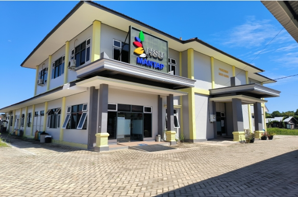

PUSKESMAS HAUR GADING
Kabupaten Hulu Sungai Utara
Kabupaten Hulu Sungai Utara

Puskesmas Haur Gading memberikan pelayanan kesehatan bagi seluruh masyarakat Kecamatan Haur Gading.
Senin s/d Kamis
08.00 - 13.00 WITA
Jum'at
08.00 - 10.00 WITA
Sabtu Pelayanan Kegawatdaruratan
08.00 - 14.00 WITA

Papan informasi pelayanan resmi
Informasi dan edukasi kesehatan terbaru dari Puskesmas
Memuat berita terbaru...
Hitung indeks massa tubuh ideal atau estimasi tanggal kelahiran buah hati secara praktis.
Tonton Video
Jl. KH. M. Janawi RT. IV, Desa Palimbang Sari, Kec. Haur Gading, Kab. Hulu Sungai Utara
UPTD Puskesmas Haur Gading
Punya kritik, saran, atau kendala pelayanan? Sampaikan langsung kepada tim layanan pengaduan kami secara online.
 Scan Barcode
Scan Barcode